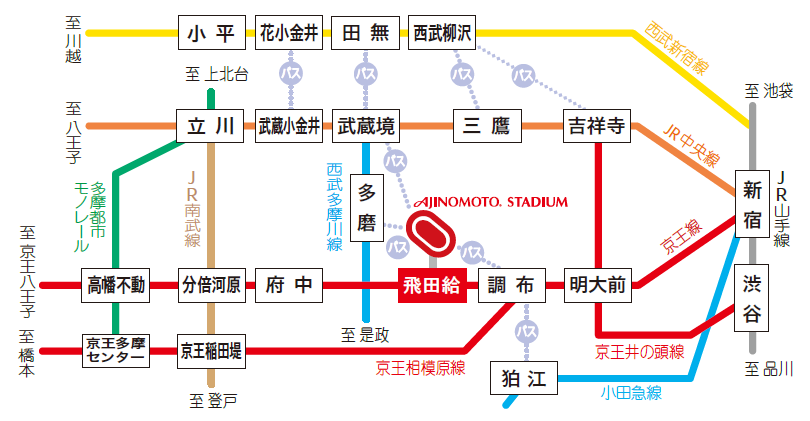
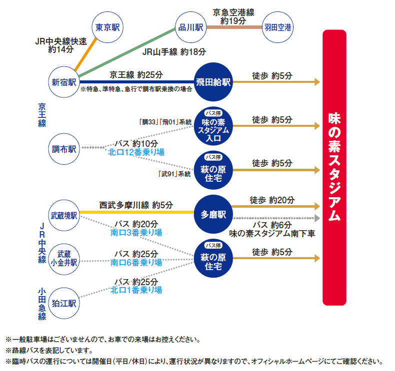
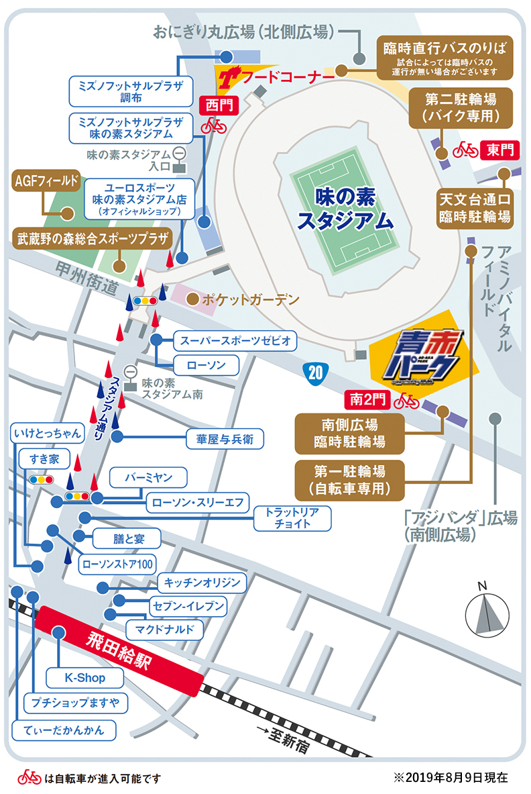
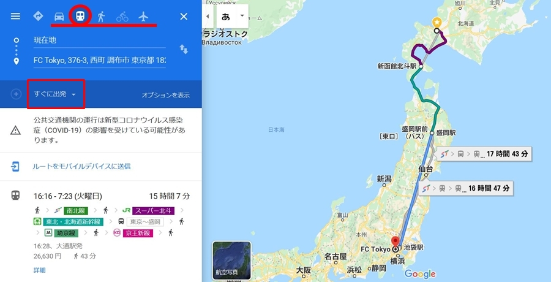
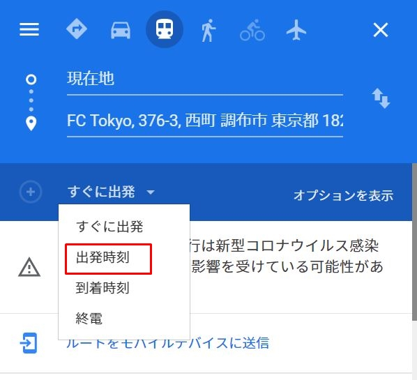

味の素スタジアム
味の素スタジアム 概要
| ホーム | ＦＣ東京のホームスタジアム |
|---|---|
| 通称 | 味スタ ※世界大会時は「東京スタジアム」表記 |
| FC東京公式HP | https://www.fctokyo.co.jp |
| 住所 | 東京都調布市西町３７６−３ |
| 最寄り空港 | 羽田空港（成田空港） |
| 最寄り駅 | 京王線 飛田給駅（徒歩5分） |
| 観戦時の情報 注意事項 |
・ビン、缶持ち込み禁止⇒紙コップへ移し替え（ペットボトル可能） ・盲導犬除くペット禁止 ・喫煙エリア以外は禁煙 ・ビジターユニフォームでのホーム側コンコースの通過はできません。 ・再入場可能 |
アクセス情報
- 交通機関・自転車
- ルート検索をする
①鉄道・バス路線案内図
②各主要駅からの経路と目安時間
③駐輪場・シャトルバス乗り場や周辺のお店位置の案内図
※臨時シャトルバスは試合ごとによって違うので、試合ごとに FC東京公式HPの「ニュース」参照 してください
以下のリンクから現在地からスタジアムまでのルート検索できます。
リンクをクリック後はGoogleマップに移行します。
上手な検索の仕方
リンクをクリックすると以下のような画面になります。
最初の設定で電車でのアクセス方法になっていますので、車で行く方は車のアイコンを押してください。
◆出発時間を試合日にあわせる
「すぐに出発」の部分をクリックすると
◆飛行機の場合の注意点
かかる費用や時間は空港間のものだけです。
また、自宅から空港と空港からスタジアムまでは含まれていません。

名前：
コメント：